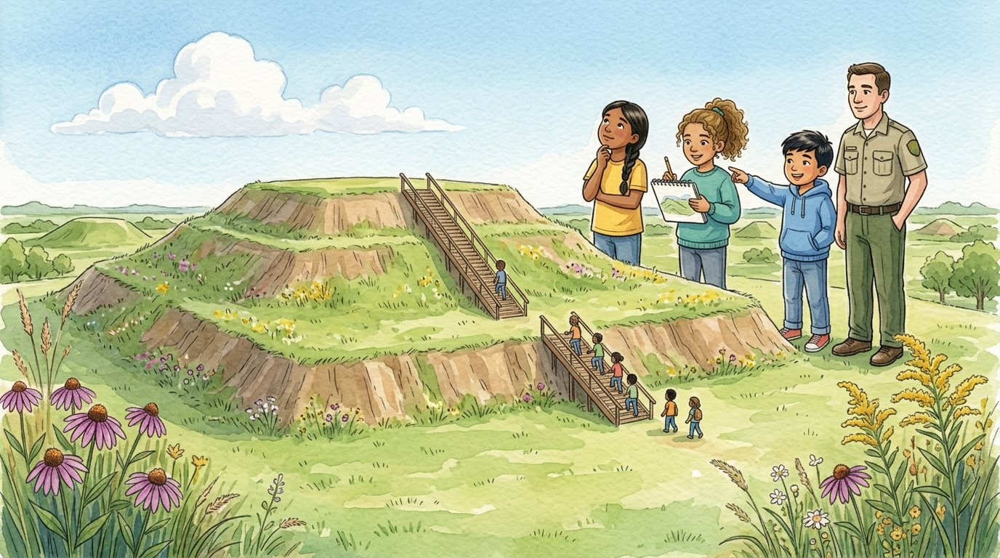

4to grado · Estudios sociales · SS.4.H.2 · SS.4.H.1
La ciudad de los montículos
Un cuento sobre Cahokia y los pueblos indígenas de Illinois, ayer y hoy.
Palabras de estudios sociales que vas a aprender
Toca una palabra verde para ver qué significa.
El cuento
El autobús de la clase cruzó casi todo Illinois hasta llegar cerca de Collinsville, no lejos del río Misisipi. Frente a ellos se levantaba una colina enorme, de lados rectos y cubierta de pasto. —Eso no es una colina cualquiera —dijo la guía del parque—. La hicieron personas.
—Hace unos mil años, aquí estaba Cahokia, la ciudad más grande al norte de México —explicó la guía—. Vivían miles de personas, quizá más de diez mil. Hoy se llama «misisipianos» a los pueblos que la construyeron.
Los habitantes construyeron más de cien . Cargaban la tierra en canastas, una y otra vez, durante muchos años. El más grande, el Montículo de los Monjes, mide unos 30 metros de alto, como un edificio de diez pisos. Salma subió la escalera contando escalones, pero a la mitad perdió la cuenta y decidió contar nubes.
Desde arriba se veía una gran plaza verde. —Aquí la gente se reunía para ceremonias y juegos —dijo la guía—. Alrededor había casas y campos donde maíz, calabaza y girasoles. Athena dibujaba sin parar en su cuaderno.
En el museo había vitrinas con puntas de flecha, ollas y conchas de mar. —¿Conchas de mar, tan lejos del mar? —preguntó Israel. —Son : objetos hechos o usados por personas del pasado —explicó la guía—. Las conchas venían del golfo de México, y el cobre, de los Grandes Lagos. Eso nos dice que Cahokia tenía con pueblos lejanos.
Los también encontraron las huellas de grandes círculos de postes de madera. Creen que servían como calendario: según por dónde salía el sol, la gente sabía cuándo cambiaban las estaciones.
Con el tiempo, la ciudad se fue quedando vacía, y sus habitantes se fueron a vivir a otros lugares. Siglos después vivieron en la zona los pueblos de la Confederación de Illinois, como los kaskaskia, los peoria y los cahokia. El sitio lleva el nombre de los cahokia, y nuestro estado se llama Illinois por el nombre de esos pueblos .
En la última sala, un cartel explicaba que esos pueblos no son solo historia. La guía contó que hoy la tribu Peoria de Oklahoma, una indígena, reúne a descendientes de los pueblos de Illinois, y que en Chicago viven miles de personas indígenas de muchas naciones. —Siguen aquí —dijo Salma—, con sus familias, sus idiomas y sus tradiciones.
En el autobús, Athena enseñó su dibujo: la plaza, el montículo y, en lo alto, una niña contando nubes. —Esa soy yo —se rio Salma.
Glosario
- montículo
- Una pequeña colina hecha por personas, amontonando tierra.
- cultivar
- Sembrar y cuidar plantas para obtener alimentos, como el maíz.
- artefacto
- Un objeto hecho o usado por personas del pasado, como una olla o una punta de flecha.
- comercio
- Comprar, vender o intercambiar cosas con otras personas o con otros pueblos.
- arqueólogo
- Un científico que estudia cómo vivían las personas del pasado a partir de lo que dejaron.
- pueblo indígena
- Un pueblo que vivía en una tierra desde mucho antes de que llegaran los europeos, y que sigue existiendo hoy.
- nación
- Un pueblo con su propia historia, su cultura y su gobierno. Muchos pueblos indígenas son naciones.
Preguntas
Elige la respuesta correcta. Si te equivocas, el cuento te muestra dónde está la respuesta.
-
Pregunta A. ¿Qué era Cahokia hace unos mil años?
Hace unos mil años, Cahokia era la ciudad más grande al norte de México.
-
Pregunta B. ¿Cómo construyeron los montículos?
Los habitantes cargaban la tierra en canastas, una y otra vez, durante muchos años.
-
Pregunta C. ¿Qué cultivaban cerca de la gran plaza?
Alrededor de la plaza había campos donde cultivaban maíz, calabaza y girasoles.
-
Pregunta D. ¿Qué nos dicen las conchas del golfo de México?
Las conchas venían de muy lejos: Cahokia tenía comercio con pueblos lejanos.
-
Pregunta E. ¿Qué aprendieron sobre los pueblos indígenas hoy?
Hoy la tribu Peoria reúne a descendientes de los pueblos de Illinois, y en Chicago viven miles de personas indígenas.
Reto: explica tu razonamiento
Pregúntale a una fuente
En el museo, la clase vio puntas de flecha, vasijas, conchas y cobre. Elige un artefacto. Escribe dos preguntas que le harías a un arqueólogo sobre él. ¿Qué nos dice de la vida en Cahokia?
Responde en tu cuaderno o coméntalo con un compañero. Usa evidencias del cuento.
Revisa tu idea
Ejemplo con una concha: «¿Cómo llegó hasta aquí desde el golfo de México?» y «¿Para qué la usaba la gente de Cahokia?». Nos dice que Cahokia comerciaba con pueblos que vivían muy lejos.